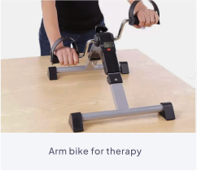
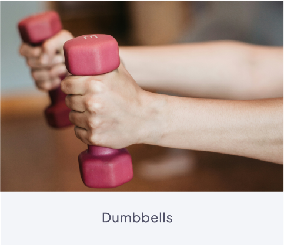
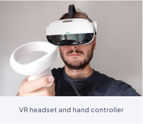
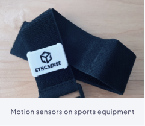
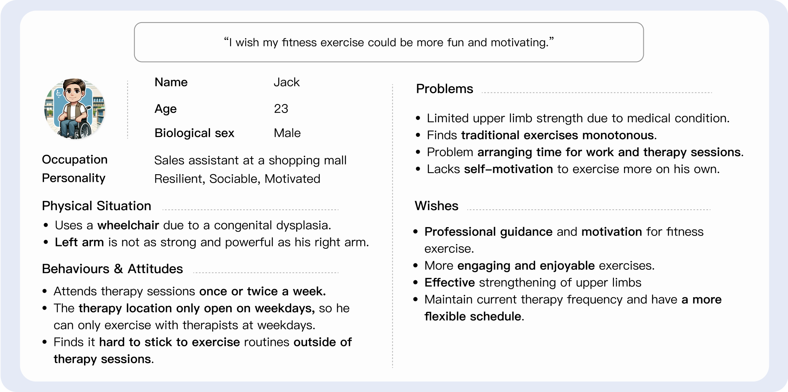
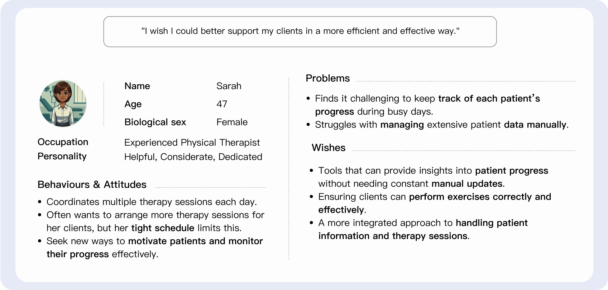
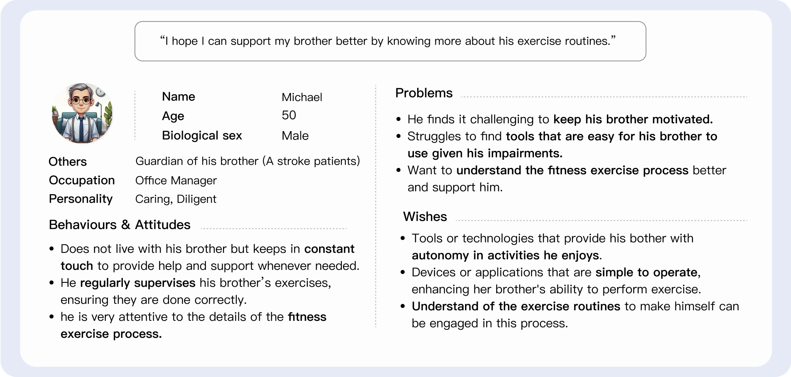
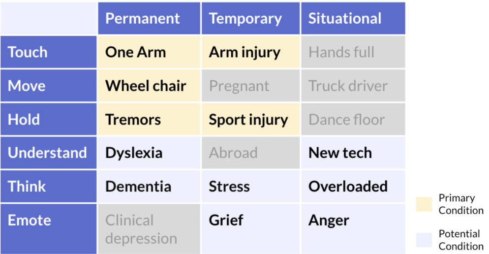
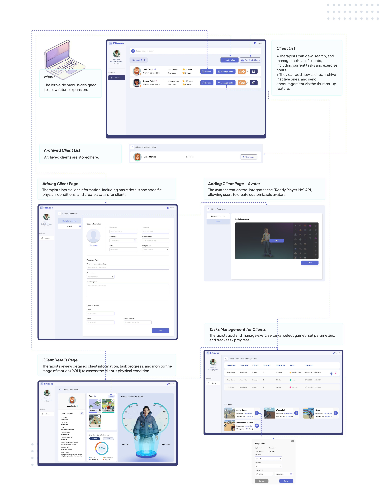
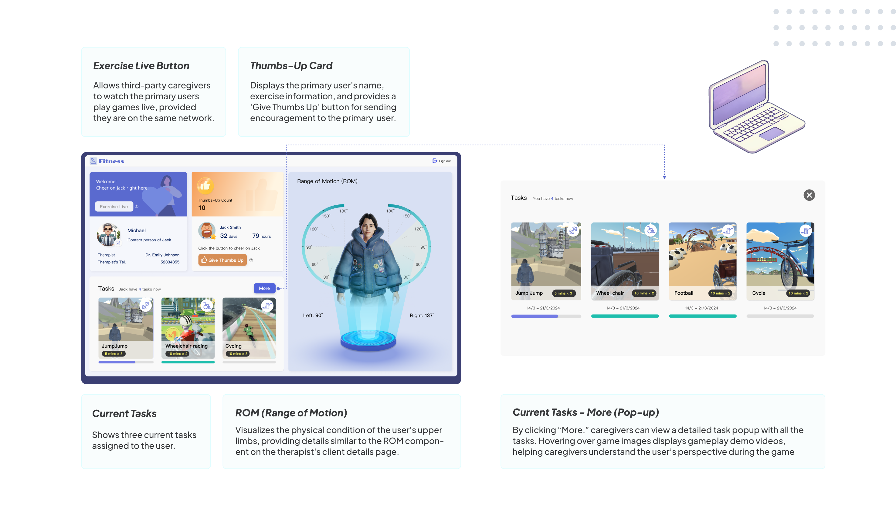

Introduction
This project is an advanced system I developed as part of a joint master's thesis at DTU Management. It integrates a VR platform and web-based dashboards to enhance fitness and rehabilitation for individuals with upper-limb impairments. I collaborated with physical therapists and students from the special school Maglemosen to create an immersive environment that improves exercise efficiency and motivation for users, while also supporting therapists and caregivers.
Outcomes
+ Developed an adaptive VR system using Human Digital Twins for personalized workouts.
+ Earned 94% positive feedback from users and therapists, with improved efficiency and focus.
+ Created a scalable framework with potential for broader rehabilitation and fitness applications.
+ Earned 94% positive feedback from users and therapists, with improved efficiency and focus.
+ Created a scalable framework with potential for broader rehabilitation and fitness applications.
My role
UX/UI Designer
Teammembers
+ 2 Software Engineer
+ 1 Game Designer/Developer
+ 1 Game Designer/Developer
Duration
5 months
Deliverables
+ Research Scope
+ Product Concept
+ User Interface
+ Functional MVP System
+ User Testing Reports
+ Product Concept
+ User Interface
+ Functional MVP System
+ User Testing Reports
01 / Background
Key Foundations
This project is built upon the following key foundations:
Upper Limb Impairments
Many people face upper limb impairments, whether inborn, injury-related, or age-related, prompting efforts to enhance mobility and improve quality of life.
Human Digital Twin
Human Digital Twin is vital for this project, offering real-time data and personalized feedback to enhance therapy for those with movement limitations.
VR Technology
We aim to use VR technology to create immersive environments, enhancing engagement and ensuring people with impairments benefit from these innovations.
Minimum Viable Product
Due to time constraint and the complexity of the project, a Minimum Viable Product approach was adopted to ensure the system remains functional and usable while keeping the design simple and focused.
Physical Devices
- Motion Sensors: Utilized for tracking user movements.
- VR Headset & Controllers: Allow users to interact with the virtual environment.
- Exercise Equipment: Includes dumbbells, hand cyclers, and wheelchairs, each offering different levels of physical engagement and tracking complexity within the VR system.





Who Are We Designing For
- Primary users: People with upper-limb impairments and need to exercise upper-limbs.
- Physical therapists: Assist primary users with their daily exercise routines.
- 3rd-party caregivers: Typically family members or guardians of the primary users.
At the early stages of the project, I created personas to represent user needs, challenges, and goals, guiding the design to address key priorities.



02 / Problem Definition
How might we design a product that integrates human digital twin and VR to effectively engage all user groups within a limited timeframe?
Impairments Scope
By consulting with physical therapists and experts in the related field, we identified the scope of impairments for the primary users by
Ability Prompt Card.

Two important facts about upper limb impairments:
- Lower Limb impairments: Upper limb impairments are often accompanied by lower limb impairments, and individuals who use wheelchairs daily require strengthening their arms.
- Cognitive Issues: Upper limb impairments can also be associated with cognitive issues, whether congenital or caused by disease or injury.
Analyzing and Evolving Existing Systems
This section examines the strengths, limitations, and challenges of previous systems while introducing the proposed design solution to provide an overview of the project's direction.
Analysis of Previews Systems
Proposed Design Solutions
03 / Concept
This section introduces the concept of the product, detailing the key ideas and solutions.
Usage Flow & Offerings
This usage flow is designed to align with key use scenarios. Hover over the cards with the icon to see what offerings are available at each step.
Hover over the cards with to explore the available offerings
Exercise Routine Understanding Ttool &
Primary Users Physical Condition Overview &
Interactive Encouragement Element
Primary Users Physical Condition Overview &
Interactive Encouragement Element
Exercise Monitoring and Recording Tool
Client Exercise Routine Management Tool
Client management Tool
Motivational VR Games &
Increased Independence in Exercise &
Supervision from Therapists and Caregivers
Increased Independence in Exercise &
Supervision from Therapists and Caregivers
Intuitive In-Game Guidance
Avatar Builder Tool
04 / Prototype
01 / Primary Users
The UI for primary users is designed within a VR platform, including the main page, game selection page, range of motion measurement page, and sensor pairing page.
02 / Physical Therapists
The UI for therapists is designed to facilitate client management, allowing therapists to view and manage client information, assign tasks, track progress, and monitor physical conditions through detailed ROM measurements.

03 / Third-Party Caregivers
The UI for third-party caregivers enables them to monitor the primary users’ fitness progress, view live exercise sessions, and provide encouragement.

05 / User Testing
We conducted user testing at a specialized education and activity center for individuals with special needs, including autism and ADHD. The center's administrators helped us select nine participants.
Participant Overview
Of the participants, six used wheelchairs daily, three had reduced hand functionality, and one had tremors that affected their motor control.
Procudure
- ⏱️ Duration: 5 days over 3 weeks, with each student attending up to 5 sessions, each lasting around 30 minutes.
- 👥 Participants: 9 students, 6 therapists.
- 🎮 Activities: Students alternated between playing VR cycling games (Hand cycle) and dumbbell exercises (Jump Jump).
The Wheelchair Race game was removed from daily activities due to discomfort and cybersickness.
Testing Methods & Goals
Primary Users
Testing Goals
+ Engagement: Test if users can stay engaged in a game session for five to ten minutes.
+ Independence: Assess if users require less help from therapists compared to traditional exercises.
+ Human-Digital Twin: Evaluate how digital twin elements enhance the user experience.
+ Independence: Assess if users require less help from therapists compared to traditional exercises.
+ Human-Digital Twin: Evaluate how digital twin elements enhance the user experience.
Methods: Interviews

Physical Therapists
Testing Goals
+ Monitor Feature: Test if physical therapists can effectively use the product to monitor exercises.
+ Manage Feature: Evaluate how the manage feature supports physical therapists in managing exercises.
+ Manage Feature: Evaluate how the manage feature supports physical therapists in managing exercises.
Methods: Interviews and Surveys
Results
We did not receive feedback from third-party caregivers due to time constraints and a lack of response to our email inquiries.
For more detailed results, including interview and survey data, please refer to the document.
For more detailed results, including interview and survey data, please refer to the document.
Student (Primary Users)
Engagement
7 / 9 Student
Found the system intuitive and easy to use, especially in avatar customization.
8 / 9 Student
Preferred the VR game exercise comparing with their daily exercise.
Student Feedback
"It didn't feel like working out, it felt like playing a game."
Independency
8 / 9 Student
Completed the cycling game without frequent assistance.
100% Student
could exercise independently, indicating the game's general accessibility.
Physical Therapists
Monitor Feature
5 / 6 Therapists
Agreed or strongly agreed that the Tasks and Exercises Completion Rate chart in the dashboard is easy to read and effectively shows the client's exercise performance.
4 / 6 Therapists
Agreed or strongly agreed that the Range of Motion (ROM) display is clear and helps them understand the student's physical progress.
Manage Feature
5 / 6 Therapists
Agreed or strongly agreed that adding a new client to the system was straightforward and easy to complete.
5 / 6 Therapists
Agreed or strongly agreed that assigning tasks for clients was intuitive and efficient.
06 / Improvement& Learning
Potential Future Improvement
- Customization vs. Broader Testing: To better meet user needs, two approaches can be considered.
(a) Customizing the system for specific groups like students in specialized institutions or stroke patients.
(b) Conducting broader user testing with a more diverse group of users, ensuring the system is effective for a wider audience. - Hardware Accessibility: Improve the design of VR hardware (headsets and controllers) to make it more user-friendly for individuals with physical impairments.
- Feedback from 3rd-Party Caregivers: Incorporate feedback from 3rd-party caregivers to better understand their needs and improve the system's overall support for primary users.
- Comprehensive Range of Motion: The range of motion tracking should be more comprehensive to provide accurate feedback on user progress. Enhancing the sensors that collect motion data would improve the user experience.
Reflections (Learnings - negative)
- Communication & Collaboration: Working on this complex project with developers and stakeholders showed the importance of clear communication and simplifying technical concepts to keep everyone aligned.
- Iterative Workflow: Design and development aren’t linear processes. Continuous iteration, feedback, and problem-solving are essential to improving the system.